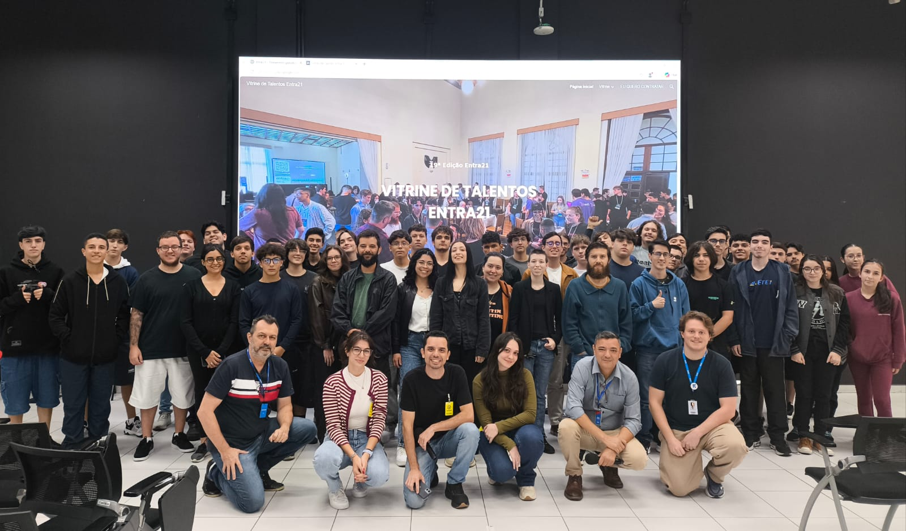
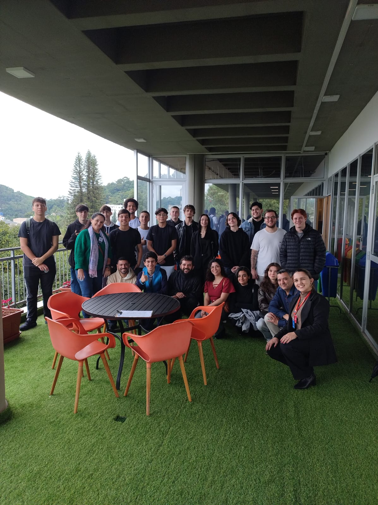
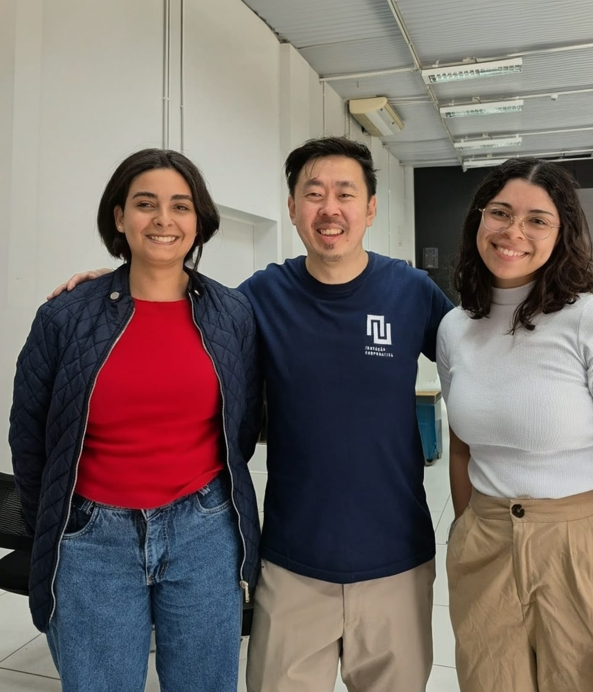
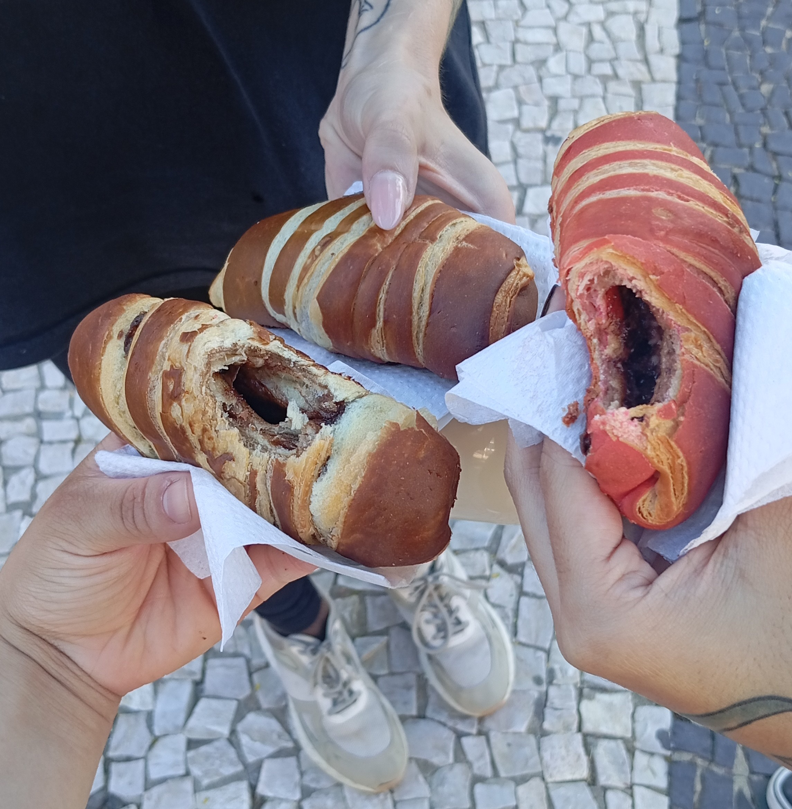
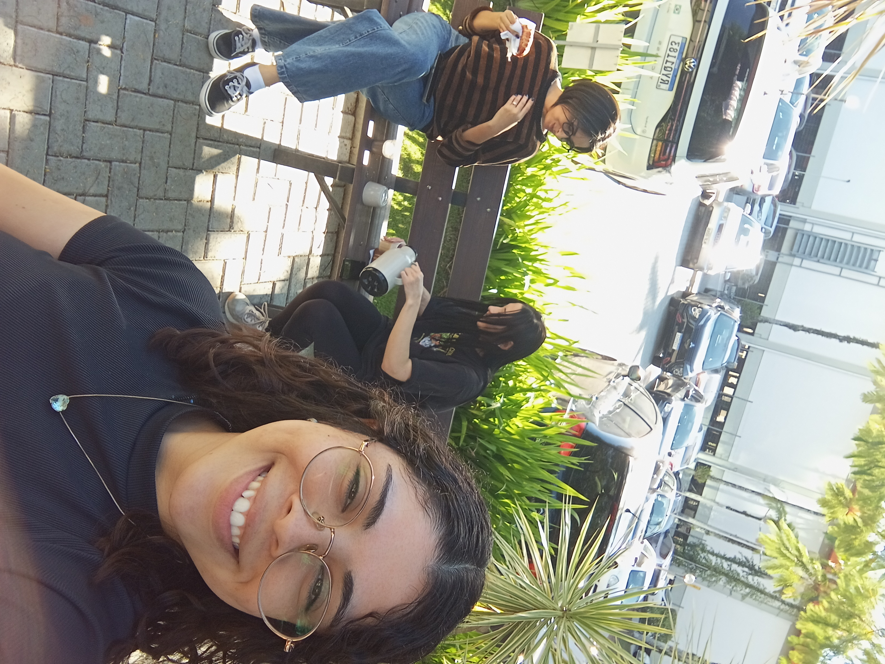
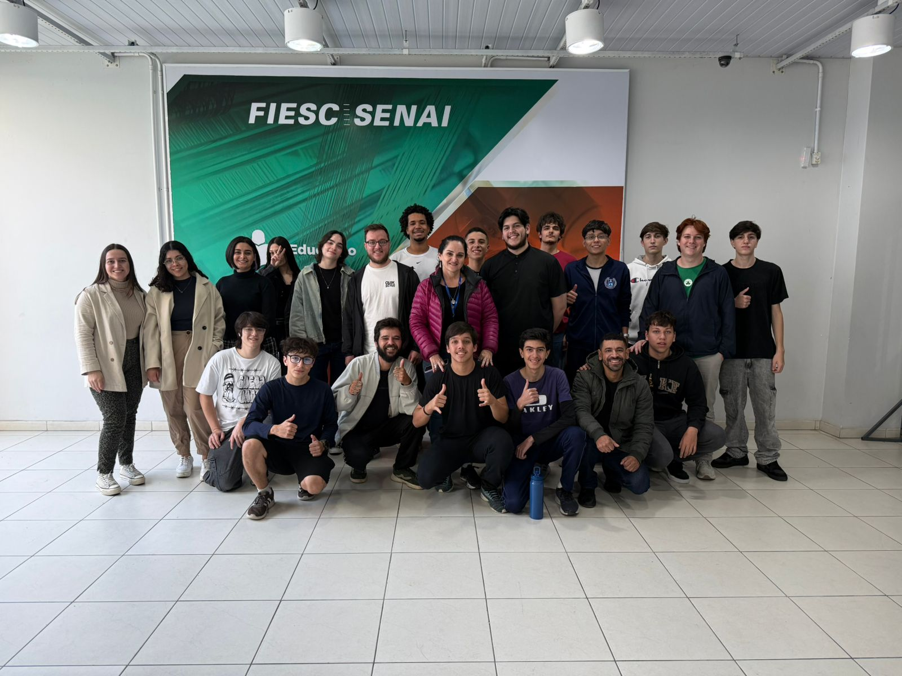
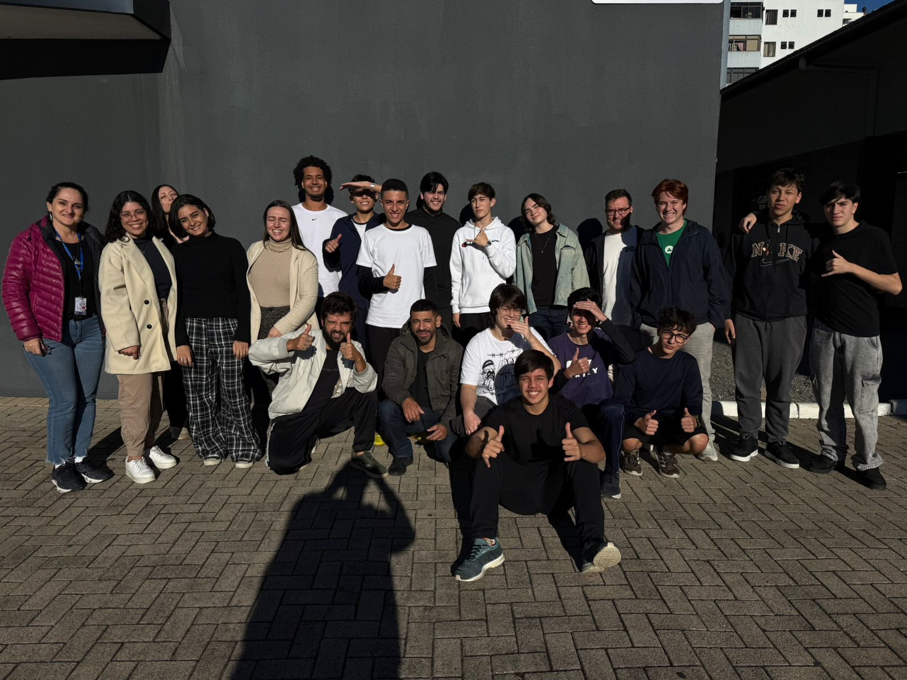

01 — Sobre mim
Um pouco de tudo
Sou estudante de Análise e Desenvolvimento de Sistemas e, estudo programação e UX Design em casa. Gosto de ocupar a mente com hobbies variados e aprender coisas novas 🎹 📚 🪴.
minha trajetoria no entra21

Sou estudante de Análise e Desenvolvimento de Sistemas e, estudo programação e UX Design em casa. Gosto de ocupar a mente com hobbies variados e aprender coisas novas 🎹 📚 🪴.
Foram 5 anos me inscrevendo, tentando e esperando por esse momento. Quando a lista estava para sair, a ansiedade tomou conta: eu checava os resultados todos os dias. Ver finalmente o meu nome entre os selecionados deu um frio na barriga, um misto de medo e alegria imensa. O desafio é grande, mas sinto que estou me saindo muito bem.
Estar no Entra21 mudou a minha rotina e a minha mentalidade. O ritmo do curso me deu a disciplina que eu precisava e me fez persistir de verdade na programação.
Desde o primeiro dia me senti acolhida. A turma é muito amigável e os professores são maravilhosos. Já sei que essa rotina e essa galera farão muita falta quando o curso acabar.
A ansiedade agora está focada no planejamento do projeto final e na responsabilidade de apresentar tudo para as empresas. É impossível não sentir aquele frio na barriga pensando no futuro e no que vai acontecer depois que o curso acabar.
Uma amostra do nosso dia a dia.








